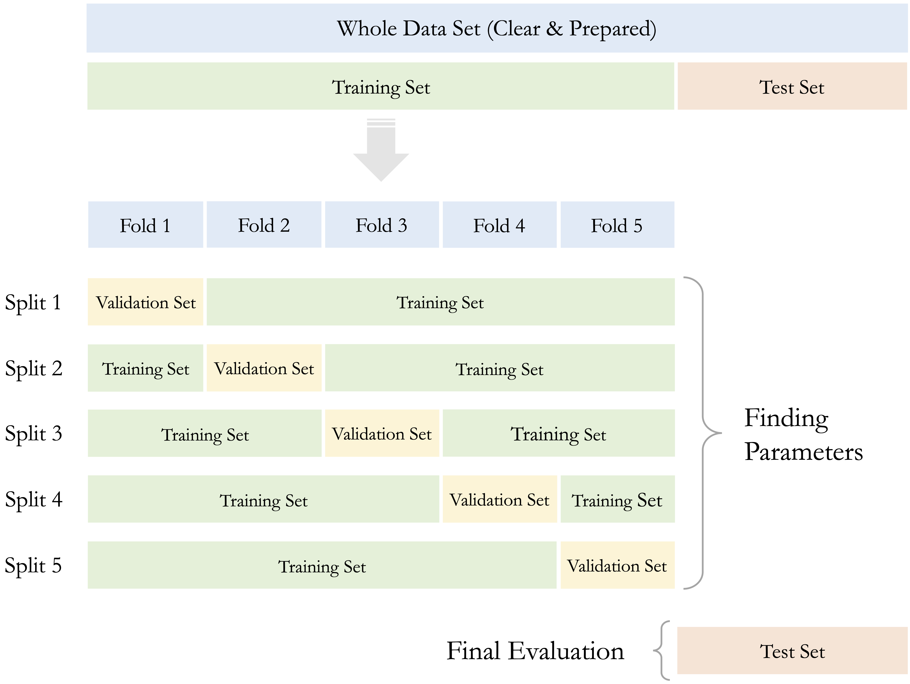

6 Setting Up Data for Modeling
Suppose a churn prediction model reports 95% accuracy, yet consistently fails to identify customers who actually churn. What went wrong? In many cases, the issue lies not in the algorithm itself but in how the data was prepared for modeling. Before reliable machine learning models can be built, the dataset must be not only clean but also properly structured to support learning, validation, and generalization.
This chapter focuses on the final preparatory step in the Data Science Workflow introduced in Figure 2.3: Step 4: Setting Up Data for Modeling. This step involves structuring the dataset in a way that enables fair training, reliable testing, and robust model evaluation.
To accomplish this, we complete three essential tasks:
Partitioning: Splitting the dataset into training and testing subsets.
Validating: Verifying that the subsets are representative of the original data.
Balancing: Addressing class imbalance when one class dominates in classification tasks.
The work in previous chapters lays the foundation for this step. In Section 2.4, you defined the modeling objective. In Chapter 3, you cleaned the data and transformed key features. Chapter Chapter 4 guided your exploratory analysis, while Chapter 5 introduced tools to test whether datasets are statistically comparable.
Now, we move to the setup phase, a critical, yet often overlooked step. It ensures that the data is not only clean but also statistically sound and properly balanced for modeling. These preparations help prevent common issues such as overfitting, biased evaluation, and data leakage.
This process, particularly for newcomers, raises important questions, such as, Why is it necessary to partition the data?, How can we verify that training and test sets are truly comparable?, and What can we do if one class is severely underrepresented?
These are not just technical details. They reflect essential principles in modern data science: fairness, reproducibility, and trust. By walking through partitioning, validating, and balancing, we lay the groundwork for building models that perform well, and do so credibly, in real-world settings.
What This Chapter Covers
This chapter completes Step 4 of the Data Science Workflow, Data Setup to Model. You will learn how to:
Partition a dataset into training and testing subsets to simulate deployment scenarios.
Validate that your split is statistically representative and free from data leakage.
Address class imbalance using oversampling, undersampling, or class weighting techniques.
By mastering these tasks, you ensure that your data is not only clean but also structured for training machine learning models that are robust, fair, and generalizable.
6.1 Why Is It Necessary to Partition the Data?
For supervised learning, the first step in setting up data for modeling is to partition the dataset into training and testing subsets—a step often misunderstood by newcomers to data science. A common question is: Why split the data before modeling? The key reason is generalization, or the model’s ability to make accurate predictions on new, unseen data. This section explains why partitioning is essential for building models that perform well not only during training but also in real-world applications.
As part of Step 4 in the Data Science Workflow, partitioning precedes validation and class balancing. Dividing the data into a training set for model development and a test set for evaluation simulates real-world deployment. This practice guards against two key modeling pitfalls: overfitting and underfitting. Their trade-off is illustrated in Figure 6.1.
Overfitting occurs when a model captures noise and specific patterns in the training data rather than general trends. Such models perform well on training data but poorly on new observations. For instance, a churn model might rely on customer IDs rather than behavior, resulting in poor generalization.
Underfitting arises when the model is too simplistic to capture meaningful structure, often due to limited complexity or overly aggressive preprocessing. An underfitted model may assign nearly identical predictions across all customers, failing to reflect relevant differences.
Evaluating performance on a separate test set helps detect both issues. A large gap between high training accuracy and low test accuracy suggests overfitting, while low accuracy on both may indicate underfitting. In either case, model adjustments are needed to improve generalization.
Another critical reason for partitioning is to prevent data leakage, the inadvertent use of information from the test set during training. Leakage can produce overly optimistic performance estimates and undermine trust in the model. Strict separation of the training and test sets ensures that evaluation reflects a model’s true predictive capability on unseen data.
Figure 6.2 summarizes the typical modeling process in supervised learning:
Partition the dataset and validate the split.
Train models on the training data.
Evaluate model performance on the test data.

By following this structure, we develop models that are both accurate and reliable. The remainder of this chapter addresses how to carry out each step in practice, beginning with partitioning strategies, followed by validation techniques and class balancing methods.
6.2 Partitioning Data: The Train–Test Split
Having established why partitioning is essential, we now turn to how it is implemented in practice. The most common method is the train–test split, also known as the holdout method. In this approach, the dataset is divided into two subsets: a training set used to develop the model and a test set reserved for evaluating the model’s ability to generalize to new, unseen data. This separation is essential for assessing out-of-sample performance.
Typical split ratios include 70–30, 80–20, or 90–10, depending on the dataset’s size and the modeling objectives. Both subsets include the same predictor variables and the outcome of interest, but only the training set’s outcome values are used during model fitting. The test set remains untouched during training to avoid data leakage and provides a realistic benchmark for evaluating the model’s predictive performance.
Example: Train–Test Split in R
We illustrate the train–test split using R and the liver package. We return to the churn dataset introduced in Chapter 4.3, where the goal is to predict customer churn using machine learning models (discussed in the next chapter). First, we load the data:
The partition() function in the liver package provides a straightforward method to split a dataset based on a specified ratio. Below, we divide the dataset into 80% training and 20% test data:
The use of set.seed(42) ensures reproducibility, meaning the same split will occur each time the code is run, a vital practice for ensuring reproducibility in model development and evaluation. The test_labels vector stores the actual target values from the test set and is used for evaluating model predictions. These labels must remain hidden during model training to avoid data leakage.
Splitting data into training and test sets allows us to assess a model’s generalization performance, that is, how well it predicts new, unseen data. While the train–test split is widely used, it can yield variable results depending on how the data is divided. A more robust and reliable alternative is cross-validation, introduced in the next section.
6.3 Cross-Validation for Robust Performance Estimation
While the train–test split is widely used for its simplicity, the resulting performance estimates can vary substantially depending on how the data is divided. Especially when working with smaller datasets. To obtain more stable and reliable estimates of a model’s generalization performance, cross-validation provides a valuable alternative.
Cross-validation is a resampling method that offers a more comprehensive evaluation than a single train–test split. In k-fold cross-validation, the dataset is randomly partitioned into k non-overlapping subsets (folds) of approximately equal size. The model is trained on k–1 folds and evaluated on the remaining fold. This process is repeated k times, with each fold serving once as the validation set. The overall performance is then estimated by averaging the metrics across all k iterations. Common choices for k include 5 or 10, as illustrated in Figure 6.3.

Cross-validation is especially useful for comparing models or tuning hyperparameters. However, repeated use of the test set during model development can lead to information leakage, resulting in overly optimistic performance estimates. To avoid this, it is best practice to hold out a separate test set for final evaluation, using cross-validation exclusively within the training set. In this setup, model selection and tuning rely on the cross-validated results from the training data, while the final model is evaluated once on the untouched test set.
This approach is depicted in Figure 6.4. It eliminates the need for a fixed validation subset and makes more efficient use of the training data, while preserving an unbiased test set for final performance reporting.

Although more computationally intensive, k-fold cross-validation helps reduce the variance of performance estimates and is particularly advantageous when data is limited. It ensures that evaluation reflects a model’s ability to generalize, rather than its performance on a specific data split. For further details and implementation examples, see Chapter 5 of An Introduction to Statistical Learning (James et al. 2013).
Partitioning data is a foundational step in predictive modeling. Yet even with a carefully designed split, it is important to verify whether the resulting subsets are representative of the original data. The next section addresses how to validate the quality of the partition before training begins.
6.4 How to Validate a Train-Test Split
How can we be sure that our train-test split truly represents the original dataset? After splitting the data, we must validate that the partition is statistically sound. A reliable split ensures that the training set reflects the broader population and that the test set mimics real-world deployment. Without this step, we risk building models that learn from biased data or fail to generalize.
Validation involves comparing the distributions of key variables, especially the target and influential predictors, across the training and testing sets. Since most datasets include many features, we usually focus on a subset that plays a central role in modeling. The statistical test we choose depends on the type of variable, as summarized in Table 6.1.
| Type of Features | Suggested Test |
|---|---|
| Binary | Two-sample Z-test |
| Numerical | Two-sample t-test |
| Categorical (with \(> 2\) categories) | Chi-square test |
Each test has specific assumptions. Parametric tests like the t-test and Z-test are most appropriate when sample sizes are large and distributions are approximately normal. For categorical features with more than two levels, the Chi-square test is the standard choice.
Let us illustrate this with the churn dataset by checking whether the proportion of churners is consistent across the training and testing sets. The target variable, churn (indicating whether a customer has churned), is binary. To determine whether the training and testing sets have similar churn rates, we conduct a two-sample Z-test. Thus, the hypotheses are defined as follows:
\[ \begin{cases} H_0: \pi_{\text{churn, train}} = \pi_{\text{churn, test}} \\ H_a: \pi_{\text{churn, train}} \neq \pi_{\text{churn, test}} \end{cases} \]
The R code below performs the test:
x1 <- sum(train_set$churn == "yes")
x2 <- sum(test_set$churn == "yes")
n1 <- nrow(train_set)
n2 <- nrow(test_set)
test_churn <- prop.test(x = c(x1, x2), n = c(n1, n2))
test_churn
2-sample test for equality of proportions with continuity correction
data: c(x1, x2) out of c(n1, n2)
X-squared = 0.098945, df = 1, p-value = 0.7531
alternative hypothesis: two.sided
95 percent confidence interval:
-0.02946053 0.02046053
sample estimates:
prop 1 prop 2
0.1405 0.1450Here, \(x_1\) and \(x_2\) denote the number of churners in the training and testing sets, respectively; \(n_1\) and \(n_2\) are the corresponding sample sizes. The function prop.test() performs the two-sample Z-test and returns a p-value indicating whether the difference in proportions is statistically significant.
The p-value is 0.753. Since this value is greater than the conventional significance level (\(\alpha = 0.05\)), we do not reject \(H_0\). This indicates that the observed difference in churn rates is not statistically significant, suggesting that the data split is valid with respect to the target variable.
Beyond the target variable, checking the distribution of key predictors helps detect imbalances that could bias the model. Unequal distributions in important features can lead the model to learn misleading or unrepresentative patterns. For instance, apply a two-sample t-test to compare means for numerical predictors such as customer.calls or day.mins, and use a Chi-square test for categorical variables like area.code. If day.mins is notably higher in the test set, a model trained on lower values may underpredict in deployment. Although it is rarely feasible to check every variable in high-dimensional datasets, focusing on known or selected predictors helps ensure a balanced and representative partition.
What If the Partition Is Invalid?
What should you do if the training and testing sets turn out to be significantly different? If validation reveals statistical imbalances, it is essential to take corrective steps to ensure that both subsets more accurately reflect the original dataset:
Revisit the random split: Even a random partition can result in imbalance due to chance. Try adjusting the random seed or modifying the split ratio to improve representativeness.
Use stratified sampling: This approach preserves the proportions of key categorical features, especially the target variable, across both training and test sets.
Apply cross-validation: Particularly valuable for small or imbalanced datasets, cross-validation reduces reliance on a single split and yields more stable performance estimates.
Even with careful attention, some imbalance may persist, especially in small or high-dimensional datasets. In such cases, additional techniques like bootstrapping or repeated sampling can improve stability and provide more reliable evaluations.
Remember, validation is more than a procedural checkpoint, it is a safeguard for the integrity of your modeling workflow. By ensuring that the training and test sets are representative, you enable models that learn honestly, perform reliably, and yield trustworthy insights. In the next section, we tackle another common issue: imbalanced classes in the training set.
6.5 Dealing with Class Imbalance
Imagine training a fraud detection model that labels every transaction as legitimate. It might boast 99% accuracy, yet fail completely at catching fraud. This scenario highlights the risk of class imbalance, where one class dominates the dataset and overshadows the rare but critical outcomes we aim to detect.
In many real-world classification tasks, one class is far less common than the other, a challenge known as class imbalance. This can lead to models that perform well on paper, often reporting high overall accuracy, while failing to identify the minority class. For example, in fraud detection, fraudulent cases are rare, and in churn prediction, most customers stay. If the model always predicts the majority class, it may appear accurate but will miss the cases that matter most.
Most machine learning algorithms optimize for overall accuracy, which can be misleading when the rare class is the true focus. A churn model trained on imbalanced data might predict nearly every customer as a non-churner, yielding high accuracy but missing actual churners, the very cases we care about. Addressing class imbalance is therefore an important step in setting up data for modeling, particularly when the minority class carries high business or scientific value.
Several strategies are commonly used to balance the training dataset and ensure that both classes are adequately represented during learning. Oversampling increases the number of minority class examples by duplicating existing cases or generating synthetic data. The popular SMOTE (Synthetic Minority Over-sampling Technique) method creates realistic synthetic examples instead of simple copies. Undersampling reduces the number of majority class examples by randomly removing observations and is useful when the dataset is large and contains redundant examples. Hybrid methods combine both approaches to achieve a balanced representation. Another powerful technique is class weighting, which adjusts the algorithm to penalize misclassification of the minority class more heavily. Many models, including logistic regression, decision trees, and support vector machines, support this approach natively.
These techniques must be applied only to the training set to avoid data leakage. The best choice depends on factors such as dataset size, the degree of imbalance, and the algorithm being used.
Let us walk through a concrete example using the churn dataset. The goal is to predict whether a customer has churned. First, we examine the distribution of the target variable in the training dataset:
# Check the class distribution
table(train_set$churn)
yes no
562 3438
prop.table(table(train_set$churn))
yes no
0.1405 0.8595The output shows that churners (churn = "yes") represent only a small proportion of the data, about 0.14, compared to non-churners. This class imbalance can result in a model that underemphasizes the very group we are most interested in predicting.
To address this in R, we can use the ovun.sample() function from the ROSE package to oversample the minority class so that it makes up 30% of the training set. This target ratio is illustrative; the optimal value depends on the use case and modeling goals.
If the ROSE package is not yet installed, use install.packages("ROSE").
# Load the ROSE package
library(ROSE)
# Oversample the training set to balance the classes with 30% churners
balanced_train_set <- ovun.sample(churn ~ ., data = train_set, method = "over", p = 0.3)$data
# Check the new class distribution
table(balanced_train_set$churn)
no yes
3438 1446
prop.table(table(balanced_train_set$churn))
no yes
0.7039312 0.2960688The ovun.sample() function generates a new training set in which the minority class is oversampled to represent 30% of the data. The formula churn ~ . tells R to balance based on the target variable while keeping all predictors.
Always apply balancing after the data has been partitioned and only to the training set. Modifying the test set would introduce bias and make the model’s performance appear artificially better than it would be in deployment. This safeguard prevents data leakage and ensures honest evaluation.
Balancing is not always necessary. Many modern algorithms incorporate internal strategies for handling class imbalance, such as class weighting or ensemble techniques. These adjust the model to account for rare events without requiring explicit data manipulation. Furthermore, rather than relying solely on overall accuracy, evaluation metrics such as precision, recall, F1-score, and AUC-ROC offer more meaningful insights into model performance on imbalanced data. We will explore these evaluation metrics in more depth in Chapter 8, where we assess model performance under class imbalance.
In summary, dealing with class imbalance helps the model focus on the right outcomes and make more equitable predictions. It is a crucial preparatory step in classification workflows, particularly when the minority class holds the greatest value.
6.6 Chapter Summary and Takeaways
This chapter finalized Step 4: Data Setup to Model in the Data Science Workflow by preparing the dataset for valid and generalizable model development.
The partitioning of data into training and testing sets was established as a safeguard against overfitting and a way to simulate real-world prediction tasks.
The validation of train-test splits ensured that both subsets were statistically representative, supporting reliable model evaluation.
The handling of class imbalance through methods such as oversampling, undersampling, and class weighting improved model sensitivity to underrepresented outcomes.
Some modeling algorithms, such as k-Nearest Neighbors introduced in the next chapter, require additional preprocessing steps like feature rescaling. These techniques were presented earlier in Chapter 3 and will be applied when appropriate in the modeling chapters that follow.
Unlike other chapters in this book, this chapter does not include a dedicated case study. This is because the procedures introduced here, partitioning, validating, and balancing, are integrated into the case studies in the remainder of the book. For example, the churn classification example in Section 7.7 illustrates how these steps are applied in practice.
Together, these preparatory steps mitigate common risks such as biased evaluation and data leakage, providing a sound foundation for predictive modeling. The next chapter builds on this foundation by introducing and evaluating classification models, beginning with logistic regression.
6.7 Exercises
This section includes both conceptual questions and applied programming exercises that reinforce key ideas from the chapter. The goal is to consolidate essential preparatory steps for predictive modeling, with a focus on partitioning, validating, and, when necessary, balancing datasets to support fair and generalizable learning.
Conceptual Questions
Why is partitioning the dataset crucial before training a machine learning model? Explain its role in ensuring generalization.
What is the main risk of training a model without separating the dataset into training and testing subsets? Provide an example where this could lead to misleading results.
Explain the difference between overfitting and underfitting. How does proper partitioning help address these issues?
Describe the role of the training set and the testing set in machine learning. Why should the test set remain unseen during model training?
What is data leakage, and how can it occur during data partitioning? Provide an example of a scenario where data leakage could lead to overly optimistic model performance.
Compare and contrast random partitioning and stratified partitioning. When would stratified partitioning be preferred?
Why is it necessary to validate the partition after splitting the dataset? What could go wrong if the training and test sets are significantly different?
How would you test whether numerical features, such as
customer.callsin the churn dataset, have similar distributions in both the training and testing sets?If a dataset is highly imbalanced, why might a model trained on it fail to generalize well? Provide an example from a real-world domain where class imbalance is a serious issue.
Compare oversampling, undersampling, and hybrid methods for handling imbalanced datasets. What are the advantages and disadvantages of each?
Why should balancing techniques be applied only to the training dataset and not to the test dataset?
Some machine learning algorithms are robust to class imbalance, while others require explicit handling of imbalance. Which types of models typically require class balancing, and which can handle imbalance naturally?
When dealing with class imbalance, why is accuracy not always the best metric to evaluate model performance? Which alternative metrics should be considered?
Suppose a dataset has a rare but critical class (e.g., fraud detection). What steps should be taken in the data partitioning and balancing phase to ensure an effective model?
After completing this chapter, which preparatory step (partitioning, validating, or balancing) do you find most critical for building trustworthy models, and why?
Hands-On Practice
The following exercises use the churn, bank, and risk datasets from the liver package. The churn and bank datasets have been introduced previously; risk will be used in Chapter 9.
Partitioning the Data
Partition the churn dataset into 75 percent training and 25 percent testing. Set a reproducible seed.
Perform a 90–10 split on the bank dataset. Report the number of observations in each subset.
Use stratified sampling to ensure that the churn rate is consistent across both subsets of the churn dataset.
Apply a 60–40 split on the risk dataset. Save the outputs as
train_riskandtest_risk.Generate density plots to compare the distribution of
incomebetween training and test sets in the bank dataset.
Validating the Partition
Use a two-sample Z-test to assess whether the churn proportion differs significantly between training and test sets.
Apply a two-sample t-test to evaluate whether average age differs across subsets in the bank dataset.
Conduct a Chi-square test to assess whether the distribution of
maritalstatus differs between subsets in the bank dataset.Suppose the churn proportion is 30 percent in training and 15 percent in testing. Identify an appropriate statistical test and explain a correction strategy.
Select three numerical variables in the risk dataset and assess whether their distributions differ between the two subsets.
Balancing the Training Dataset
Examine the class distribution of
churnin the training set. Report the proportion of churners.Apply random oversampling to increase the churner class to 40 percent of the training data using the ROSE package.
Use undersampling to equalize the
deposit = "yes"anddeposit = "no"classes in the training set of the bank dataset.Create bar plots to compare the class distribution in the churn dataset before and after balancing.
Self-Reflection
Which of the three preparation steps (partitioning, validation, and balancing) currently feels most intuitive, and which would benefit from additional practice? Justify the response.
How does a deeper understanding of data preparation influence perceptions of model evaluation and fairness?